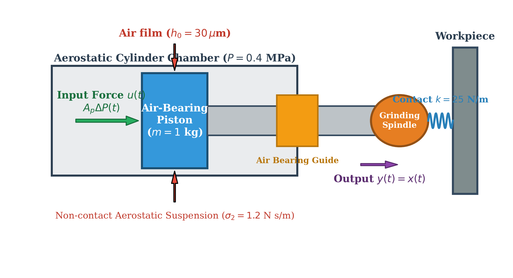
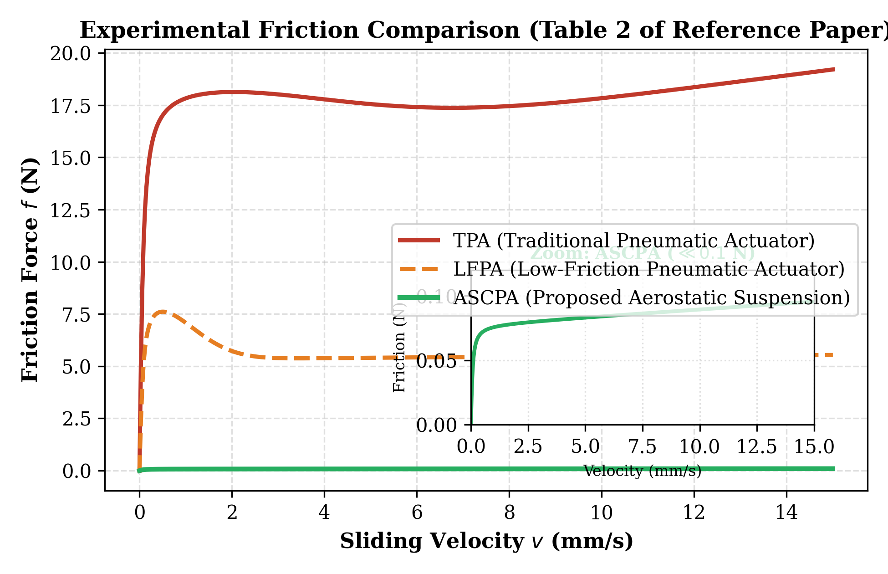
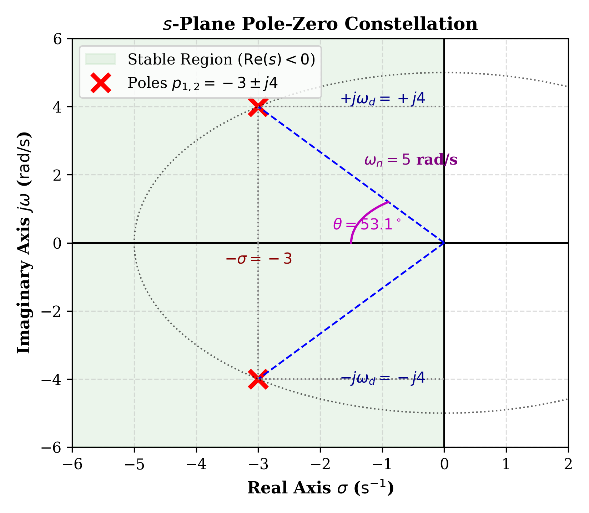
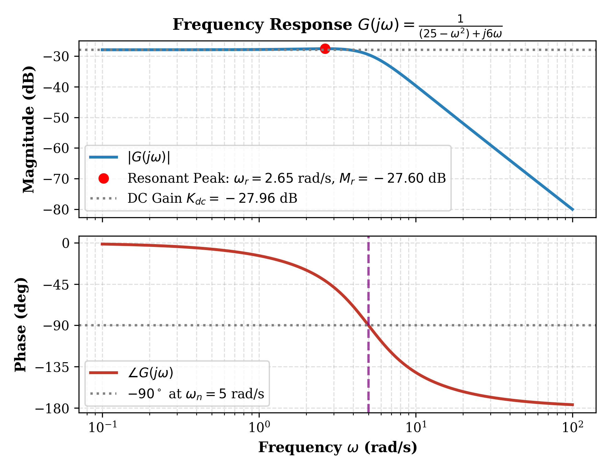
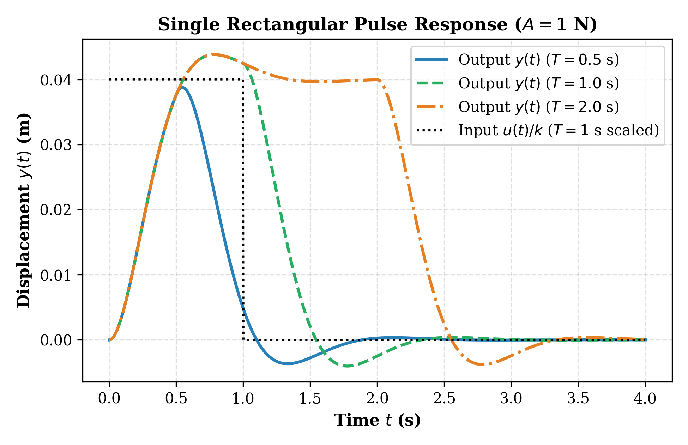
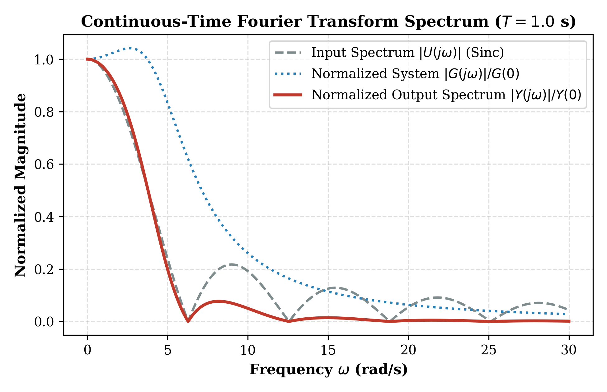
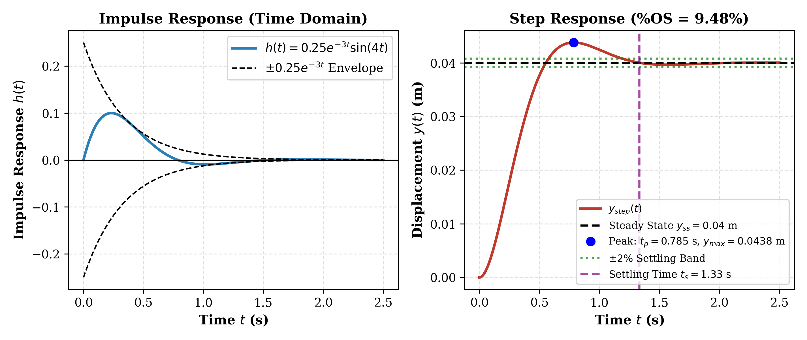

Kajian sistemik aktuator pneumatik kompak bersuspensi aerostatik (ASCPA) untuk penggerindaan robotik presisi: eliminasi gesekan nonlinier sebesar 99,48%, formulasi relasi fisis masukan-keluaran, hingga reduksi matematis menjadi 2 buah persamaan diferensial orde 1 (State-Space).
Nilai eigen matriks keadaan: \(\lambda_{1,2} = -3 \pm j4\).
Kajian jurnal ilmiah non-buku teks bereputasi tinggi terindeks Scopus Q1 & Web of Science.
Pada manufaktur bilah turbin mesin aero dan lensa optik, end-effector robot membutuhkan aktuator fleksibel yang mampu menjaga gaya kontak normal secara stabil guna mencegah terjadinya retak mikro bawah-permukaan.
Aktuator konvensional menggunakan segel karet luncur yang memicu gesekan Coulomb masif (\(15\text{ N}\)). Ini menghasilkan histeresis, osilasi limit cycles, dan perilaku nonlinier parah yang merusak kehalusan penggerindaan.
Dengan menyuplai udara bertekanan hidrostatik (\(P = 0.4\,\text{MPa}\)) melalui \(n=10\) orifis ke celah \(h_0 = 30\,\mu\text{m}\), kontak padat ditiadakan. Gesekan Coulomb turun 99.48% menjadi hanya \(0.0777\text{ N}\), mewujudkan sistem linier murni!
| Parameter Model LuGre | TPA (Konvensional) | LFPA (Low Friction) | ASCPA (Suspensi Udara) | Tingkat Reduksi |
|---|---|---|---|---|
| Gesekan Coulomb \(F_c\) | 15.00 N | 5.40 N | 0.0777 N | Turun 99.48% |
| Gesekan Statis Maksimum \(F_s\) | 18.45 N | 8.70 N | 0.0767 N | Turun 99.58% |
| Kecepatan Stribeck \(v_s\) | 5.00 mm/s | 1.40 mm/s | 0.01 mm/s | Bebas stick-slip |
| Koefisien Redaman Viskos \(\sigma_2\) | 0.283 N·s/mm | 0.010 N·s/mm | 0.0012 N·s/mm (\(1.2\,\text{N}\cdot\text{s/m}\)) | Dominan Linier |
Mekanika translasi 1-DOF: dari modulasi tekanan katup servo hingga perpindahan pahat & gaya kontak gerinda.

Menunjukkan rakitan piston bersuspensi film udara hidrostatik tebal \(h_0 = 30\,\mu\text{m}\), batang piston bertumpu pada bantalan udara tanpa kontak, roda gerinda berputar, serta interaksi kontak elastis dengan benda kerja (\(k = 25\,\text{N/m}\)).
Asal Fisis: Perbedaan tekanan diferensial \(\Delta P(t)\) antara ruang maju dan mundur silinder yang dimodulasi secara dinamis oleh high-speed proportional servo valve (Festo MPYE-5-1/4-010-B) yang dikontrol tegangan perintah dari Real-Time Control Processor (RCP).
Asal Fisis: Perpindahan aksial \(x(t)\) dari rakitan spindel gerinda. Karena antarmuka kontak pahat dengan benda kerja memiliki konstanta kekakuan elastis \(k_e\), gaya penggerindaan normal \(F_c(t)\) berbanding lurus secara linier terhadap \(y(t)\).
Dari kesetimbangan translasi Hukum II Newton ke bentuk kanonik sistem getaran LTI.
Jumlah gaya mencakup dorong pneumatik \(F_{\text{pneu}}\), gesekan \(F_{\text{fric}}\), dan kontak \(F_{\text{cont}}\).
Lapisan aerostatik mengubah gesekan padat Coulomb menjadi geser laminer linier murni.
Persamaan diferensial biasa (PDB) linier invarian waktu waktu-kontinu yang eksak.
\(\omega_n = \sqrt{k/m} = 5.0\text{ rad/s}\), \(\zeta = \frac{c}{2\sqrt{km}} = 0.60\) (underdamped).
Menerapkan Transformasi Laplace unilateral pada kondisi awal nol (\(y(0) = 0, \dot{y}(0) = 0\)):
Akar persamaan karakteristik menghasilkan sepasang kutub konjugat kompleks: \(p_{1,2} = -3 \pm j4\), dengan laju redaman eksponensial \(\sigma = 3.0\,\text{s}^{-1}\) dan frekuensi sudut teredam \(\omega_d = 4.0\,\text{rad/s}\).
Penjelasan langkah demi langkah (step-by-step) reduksi orde ke dalam variabel keadaan (*State-Space Representation*).
Karena sistem mekanik ini memiliki 2 elemen penyimpan energi (energi potensial pegas kontak dan energi kinetik massa), kita mendefinisikan 2 variabel keadaan yang mewakili posisi dan kecepatan:
Cari laju perubahan waktu terhadap masing-masing variabel (\(\dot{x}_1\) dan \(\dot{x}_2\)):
Berdasarkan definisi kecepatan, turunan posisi adalah kecepatan:
Turunan kecepatan adalah percepatan \(\ddot{y}(t)\). Ambil persamaan gerak Hukum Newton:
Substitusikan \(y(t) = x_1(t)\) dan \(\dot{y}(t) = x_2(t)\):
Dua persamaan orde 1 simultan di atas disatukan ke dalam bentuk kanonik matriks:
Persamaan keluaran sistem untuk perpindahan \(y(t) = x_1(t)\):
Persamaan karakteristik matriks: \(\det(s\mathbf{I} - \mathbf{A}) = s(s + 6) - (-1)(25) = s^2 + 6s + 25 = 0\).
Nilai eigen matriks ruang keadaan terbukti identik mutlak dengan kutub fungsi alih Laplace, menjamin integritas fisik pemodelan.
Ubah parameter fisik aktuator dan amati respon transien grafik posisi \(y(t)\) dan kecepatan \(v(t)\) seketika.
Posisi \(y(t) = x_1\) dan Kecepatan \(v(t) = x_2\)
Grafik resmi hasil eksekusi Python dan MATLAB dari direktori figures/.

Gbr. 2 Paper MSSPMembuktikan lenyapnya histeresis gesek padat pada ASCPA berkat pelumasan aerostatik.

Gbr. 3 Konstelasi KutubSepasang kutub kompleks \(p_{1,2} = -3 \pm j4\) pada LHP dengan sudut \(\theta = 126.87^\circ\).

Gbr. 4 Diagram BodeFilter lolos-rendah orde 2 dengan roll-off curam \(-40\,\text{dB/dekade}\) dan fasa hingga \(-180^\circ\).

Gbr. 5 Pulsa PersegiRespon domain waktu untuk durasi \(T = 0.5, 1.0, 2.0\,\text{s}\) (eksitasi paksa & relaksasi bebas).

Gbr. 6 CTFT SpektrumSpektrum keluaran meluruh pada \(\mathcal{O}(1/\omega^3)\) (\(-60\,\text{dB/dekade}\)), memperhalus lonjakan katup.

Gbr. 9 Impuls & StepValidasi analitis vs integrasi numerik: overshoot \(9.48\%\), waktu puncak \(t_p = 0.785\text{ s}\).